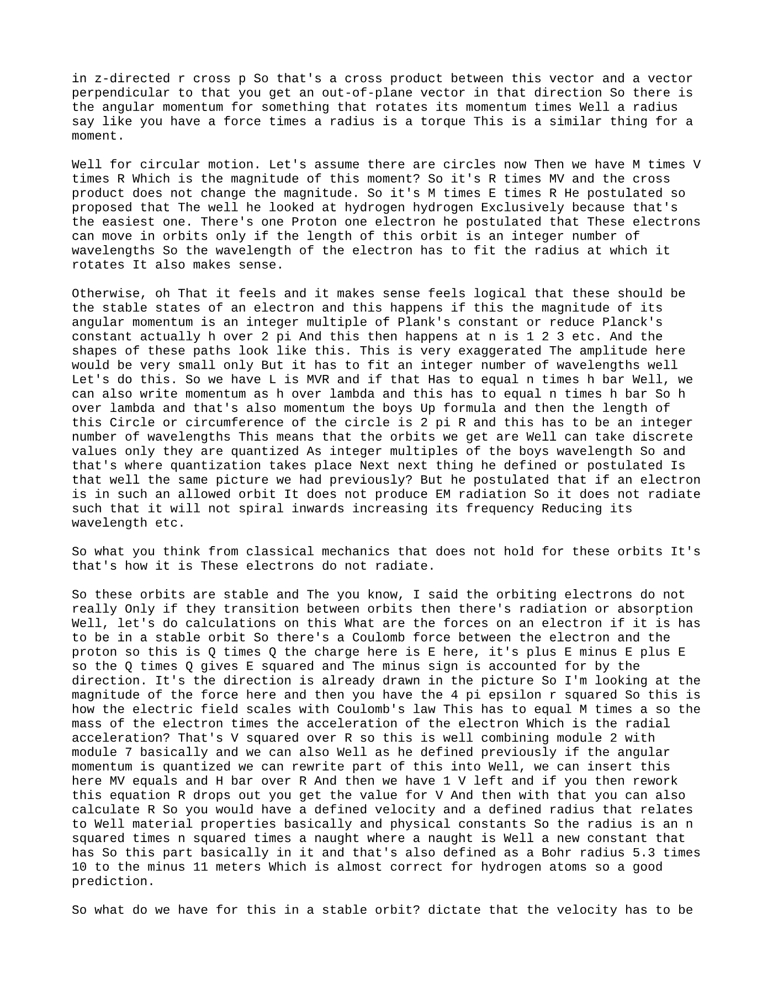

Summary
Good morning Welcome back to the last week of lectures for this course next week on Monday We will have exam practice and a guest lecture by the colleague of ours of mine actually north yours Who’s working on space applications? So I’ll put an announcement on that on campus Things we’ll cover today
Knowledge tree
- No knowledge topics were extracted.
Source material
Lecture Overview
Good morning.
Welcome back to the last week of lectures for this course.
Next Week
- Monday: Exam practice
- Guest lecture: By a colleague working on space applications
- Announcement: Will be posted on Canvas
- Relevance: Today’s topics are also relevant for that lecture
- Space example: Included in today’s lecture
Today’s Topic
Today is the second lecture on quantum physics.
This year’s lecture is different from last year’s because the material has been expanded.
Why the Material Was Expanded
Last year, at the end of Q2, there was a cyber attack. The TU/e had to shut down everything for one week.
As a result:
- Q2 was extended by one week
- Q3 was shortened by one week
- Everything had to fit into seven weeks
- There were effectively six and a half weeks of content plus one lecture for exam practice
This year, there are seven full weeks of content, so the material has been expanded to give more background.
The pace today should be relatively easy.
Exam Practice Question
Let’s look at a multiple-choice question from the exam of two years ago.
You should now be able to answer it. Please think about it first, then we’ll solve it and continue with the lecture content.
You may need to do some back-of-the-envelope calculations and/or consult your formula sheet.
Key Idea Reviewed from Last Thursday
Particles that have a mass can have momentum.
Particles that do not have mass, like photons, can also have momentum.
Momentum Relations
For particles with mass:
- Momentum:
p = mv - Also:
p = h / λ
For particles without mass:
- Only
p = h / λapplies
For Electrons and Protons
We are talking here about electrons and protons, so these are particles with mass.
The question asks for them to have the same speed.
So we write:
v = h / (mλ)
We can do this for both the proton and the electron.
If the speeds must be equal, then:
h / (m_p λ_p) = h / (m_e λ_e)
Since h is the same throughout:
m_p λ_p = m_e λ_e
So:
λ_p = (m_e / m_p) λ_e
The mass ratio is:
m_e / m_p = 1 / 1836
So:
λ_p = (1 / 1836) λ_e
- Correct answer: E
Variations of This Question
There are many versions of this kind of problem:
- Same speed
- Same momentum
- Same wavelength
Each version gives a different ratio.
Because momentum scales with mass, the result depends on what quantity is held fixed.
Review of Last Thursday
On Thursday, we discussed the photoelectric effect.
Main Point
Several effects could not be explained using the classical view of waves alone.
So we needed a particle interpretation to explain them.
Topics Covered
- Photoelectric effect
- X-ray production
- Compton scattering
- Wave-particle duality
- Feynman’s interpretation
- Uncertainty principle
Today, we build on that.
Today’s Scope
Today mainly covers:
- Chapter 39
- First section of Chapter 40
A significant amount of time will be spent on how the wave function and the Schrödinger equation are derived.
- The first part should be easier
- The more difficult part is in the second lecture hour
- On Thursday, everything will be wrapped up
de Broglie Wavelength and Planck Relation
de Broglie Wavelength
The formula shown before is the de Broglie wavelength.
It holds for any particle with:
- A certain mass
- A certain velocity
We assume the speed is low enough that relativity is not needed.
So:
- The speed is well below the speed of light
- The rest mass is effectively the same as the particle mass
- No relativistic correction factor is needed
Momentum Forms
p = h / λp = ħk
Where:
ħ = h / 2π
Sometimes you see h, sometimes ħ.
The Schrödinger equation uses ħ because of the scaling factor involved.
Planck’s Relation
We also had Planck’s relation, which states:
- Energy is quantized
- Energy is coupled to frequency
So:
E = hf
That means:
- Planck’s constant times frequency gives the energy of a photon
This helped Niels Bohr derive his interpretation of the atom.
It was an intermediate step toward the modern picture, but it remains important because it shows the path toward wave functions.
Why the Classical Model Failed
The photoelectric effect required a particle interpretation.
Photoelectric Effect
When light hits a metal, it can emit an electron if the incoming photon has enough energy to overcome the binding energy of electrons in the lattice.
So:
- Light behaves like particles
- Light also behaves like waves
But not both in the same explanation at the same time.
Use the Right Interpretation for the Right Phenomenon
- Wave interpretation: interference and diffraction
- Particle interpretation: collisions
Depending on the effect you want to describe, you need one or the other.
Modern Picture of the Atom
An atom is the smallest unit of an element that still has all the characteristics of that element.
It consists of:
- A small, dense, charged nucleus
- Protons and neutrons in the nucleus
- A system of electrons around it
The lecturer avoids saying “shells” here and instead says:
- A system of electrons describes where the electrons are
How did physics arrive at this picture?
Spectra of Gases
By around 1900, experiments showed that when light is shone through a gas, interesting spectral effects occur.
Continuous Input Spectrum
The light source has all colors in it, so it has a continuous spectrum.
The intensity may vary with wavelength, but it is still continuous.
What the Gas Does
When light passes through a gas:
- The gas absorbs some wavelengths
- The gas also re-emits light
This leads to measurable spectral lines.
Emission Spectrum
The emission spectrum of a gas contains discrete lines.
These lines appear at distinct colors and act as a signature of the gas.
Absorption Spectrum
The transmitted light is the original spectrum minus what the gas absorbed.
That gives dark lines where absorption occurred.
So:
- Input signal: continuous spectrum
- Outputs:
- Emission spectrum
- Absorption spectrum
Practical Measurement
To better distinguish spectral lines:
- The gas may be heated to create a gaseous state
- A diffraction grating is often used
- The grating spreads the spectrum over a screen or detector
This makes the wavelengths easier to measure.
Key Idea
If there is gas in the path of the light, then under idealized conditions you observe a line spectrum with discrete wavelengths.
Each type of gas has a specific spectral signature.
Hydrogen was studied most extensively around 1900-1910, but the same principle holds for many gases.
The horizontal axis can be interpreted as:
- Photon energy
- Or equivalently
h / λ - Or effectively
1 / λ
Thomson’s Model of the Atom
Before Rutherford, the best atomic model was Thomson’s model.
Thomson’s Picture
The atom was thought to be:
- A very small sphere of radius about
10^-10 m - Generally positively charged
- With electrons sprinkled throughout it
The analogy used was:
- Like nuts or raisins in a cake
It was a 3D spherical object, but not much more was known.
They also knew:
- All atoms except hydrogen had more than one electron
- They had some idea of total positive and negative charge
Spectral Explanation in Thomson’s Model
In this model:
- Electrons embedded in the positive substance could oscillate
- If light excited them at their natural frequency, they could absorb energy
This was analogous to a harmonic oscillator or a resonant system.
So the spectral lines were explained as resonance frequencies of embedded electrons.
Rutherford’s Scattering Experiment
Then came Rutherford’s experiment.
Setup
He fired alpha particles at a gold foil.
An alpha particle is the nucleus of a helium atom:
- 2 protons
- 2 neutrons
The goal was to test Thomson’s atomic model.
What Was Observed
Most alpha particles passed through the foil.
But:
- Some were deflected at angles
- Some were deflected strongly
- A few even scattered backward, toward the source
This could not be explained by Thomson’s model.
Why Thomson’s Model Failed
In Thomson’s model, a positively charged alpha particle passing through a diffuse positive sphere would only be deflected slightly.
You would expect only small-angle scattering.
But Rutherford observed backscattering.
That meant the positive charge could not be spread out diffusely.
Rutherford’s Conclusion
The only explanation was that:
- The positive charge is concentrated in a much smaller volume
- The electric field near that region is therefore much stronger
- Since the field scales as
1 / r^2, making the charge more concentrated produces much stronger repulsion nearby
That small concentrated region became the nucleus.
Estimated Size
The nucleus was estimated to be of order:
10^-14 m
This is about four orders of magnitude smaller than the atom size in Thomson’s model.
The nucleus contains:
- All the positive charge
- Most of the mass
The Remaining Problem After Rutherford
Rutherford’s model still could not explain the spectral lines.
Previously, embedded electrons could oscillate and absorb at certain frequencies.
But if electrons now orbit the nucleus, a new problem appears.
Problem with Orbiting Electrons
An orbit requires radial acceleration.
For circular motion:
- There is always an inward acceleration
But accelerating charges emit electromagnetic radiation.
So if electrons orbit the nucleus:
- They should radiate continuously
- Lose energy
- Spiral inward
- Increase in speed
- Emit higher-frequency radiation as they spiral inward
But atoms do not do this.
So Rutherford’s model was still incomplete.
This is what Bohr solved.
Bohr’s Model of the Atom
Bohr took the next major step.
What Was Already Known
By then, physicists knew:
- Heated atoms emit light in spectral lines
- These occur at discrete frequencies
- Photons have a defined energy
- Atoms can move between energy states by absorbing or emitting photons
If an atom transitions from an excited state to a lower state:
- The energy difference determines the emitted frequency
If light shines on an atom:
- It can be excited from a lower to a higher state if the supplied photon energy matches the energy gap
Bohr’s Main Postulates
Bohr proposed that:
- The atom can only have certain discrete energy levels
- Its energy is quantized
- An excited atom can transition between these levels by absorbing or emitting a photon
Angular Momentum Quantization
Bohr considered an electron orbiting a nucleus, using classical mechanics as a starting point.
Angular Momentum
For an electron of mass m moving with speed v, the linear momentum is:
p = mv
For rotational motion, the angular momentum is:
L = r x p
For circular motion, the magnitude becomes:
L = mvr
Bohr’s Postulate
Bohr proposed that electrons can move in orbits only if the orbit contains an integer number of wavelengths.
So the electron wavelength must “fit” around the orbit.
That corresponds to:
L = nħ
where:
n = 1, 2, 3, ...
This means the angular momentum is quantized in integer multiples of ħ.
Relation to the de Broglie Wavelength
Since momentum can also be written as:
p = h / λ
and the orbit circumference is:
2πr
The allowed orbits satisfy:
2πr = nλ
So only discrete orbits are allowed.
This is where quantization enters.
Stable Orbits in Bohr’s Model
Bohr also postulated something crucial:
- If an electron is in an allowed orbit, it does not radiate electromagnetic energy
So it does not spiral inward.
Only when it transitions between orbits does radiation occur.
These allowed orbits are therefore stable.
Force Balance in a Bohr Orbit
For an electron in a stable orbit, the forces must balance.
Coulomb Force Equals Centripetal Force
The electric attraction between proton and electron provides the centripetal acceleration.
So:
- Coulomb force: proportional to
e^2 / (4πϵ_0 r^2) - Centripetal force:
mv^2 / r
Thus:
e^2 / (4πϵ_0 r^2) = mv^2 / r
This combines ideas from:
- Module 2: mechanics
- Module 7: electricity
Using angular momentum quantization, one can derive expressions for:
- The allowed velocity
- The allowed radius
Bohr Radius
The radius becomes:
r_n = n^2 a_0
where a_0 is the Bohr radius:
a_0 = 5.3 x 10^-11 m
This is a good approximation for hydrogen.
Energy Levels in the Bohr Model
Electrons can move only between allowed orbits.
Radiation During Transitions
If an electron moves:
- From a higher orbit to a lower orbit, it emits a photon
- From a lower orbit to a higher orbit, it absorbs a photon
The energy relation is:
hf = ΔE
or equivalently:
hc / λ = ΔE
Kinetic and Potential Energy
The electron has:
- Kinetic energy: because it moves
- Potential energy: because it is in an electric field
The total energy is:
- The sum of kinetic and potential energy
- Negative for bound states
This can be simplified into the familiar energy-level formula involving the Rydberg constant.
Principal Quantum Number
The orbit number n is called the principal quantum number.
The Rydberg Formula
If an electron transitions from a higher level to a lower level, the emitted photon has a wavelength determined by the Rydberg formula:
1 / λ = R (1 / n_l^2 - 1 / n_u^2)
where:
n_l: lower orbitn_u: upper orbitn_u > n_l
This ensures the result is positive.
This is the formula many of you may have seen in secondary school.
Student Question: Why No Radiation in the Orbit?
A student asked: if the electron is accelerating in orbit, why does it not radiate?
Answer
Classically, it should radiate.
But Bohr postulated that electrons in allowed orbits do not radiate.
This was motivated by experiment:
- Atoms do not continuously radiate while simply existing in stable states
- Radiation occurs only during transitions between allowed orbits
This postulate was supported by measurements.
Hydrogen Energy Levels and Spectral Series
In practice, the hydrogen atom has many energy levels.
Ground State
The lowest energy level is:
-13.6 eV
This corresponds to:
n = 1- The ground state
Spectral Series
There are several series describing emitted light:
- Some in the visible
- Some in the infrared
- Some in the ultraviolet
So this applies to all electromagnetic radiation, not just visible light.
The gaps between levels get smaller for higher n, because the energy depends on 1 / n^2.
Connection to Gas Spectra
A student asked how this relates to the earlier gas example.
Answer
If the gas is hydrogen, then absorption and emission lines correspond directly to transitions between the hydrogen energy levels.
For other gases:
- The same principle applies
- But the energy levels are different
- So the spectral lines are different
Hydrogen was most studied at the time because it is also the simplest atom:
- One proton
- One electron
Quiz on Excitation Energy
A quiz followed on excitation energies measured in electron volts.
Key Point
To make an electron jump to another orbit, you need the exact required energy.
If the energy is larger than needed, the excess does not simply disappear in some arbitrary way.
That is why absorption occurs at discrete spectral lines.
- Correct answer: C
- Required energy: exactly 2.5 eV
Break
There was a 15-minute break.
After the break, the lecture continued with:
- The laser
- Blackbody radiation
The Laser
This is one of the applications of absorption and emission.
It is discussed in much more detail in the follow-up course Introduction to Photonics in year two.
Here, only the principle is introduced.
Basic Atomic Processes
Atoms can interact with light by:
- Absorbing a photon and moving to an excited state
- Emitting a photon when returning to a lower state
Usually, after excitation, an atom wants to return to its ground state.
This may take:
- Nanoseconds
- Sometimes milliseconds
Stimulated Emission
If a photon of the right frequency encounters an already excited atom, it can trigger the atom to emit its photon.
Then:
- One photon goes in
- Two photons come out
The emitted photon has:
- The same direction
- The same phase
This is called stimulated emission.
Laser Principle
This effect can be amplified.
That is why laser stands for:
Light Amplification by Stimulated Emission of Radiation
Inside a laser:
- There is a tube, often containing a gas
- Light reflects back and forth
- One mirror is 100% reflective
- The other is slightly less reflective so some light can leave
To make the laser work, many atoms must be kept in an excited state.
This is done using population inversion.
Population Inversion
Population inversion means:
- More atoms are in the excited state than in the ground state
The excited state used is typically metastable, meaning the atom can remain there relatively long.
Metastable State
A metastable state lasts longer than a normal excited state.
Typical comparison:
- Normal: nanoseconds
- Metastable: around milliseconds
This longer lifetime gives enough time for stimulated emission to occur efficiently.
Result
The laser produces:
- Coherent light
- Monochromatic light
- Light with a single frequency
- Light that is highly in phase
Blackbody Radiation
The second application is blackbody radiation.
This relates to continuous spectra, not discrete spectral lines.
Difference from Gases
For gases:
- Atoms are relatively separate
- You often get line spectra
For dense media such as:
- Fluids
- Solids
atoms are packed closely together and interact strongly.
As a result:
- You do not get isolated lines
- You get a continuous emission spectrum
Blackbody Definition
A blackbody is an idealized hot dense object that can absorb radiation over a continuous range of frequencies.
A useful mental image is:
- A box with absorbing interior walls
- Light entering the box reflects many times
- With each bounce, less remains
- Eventually it is effectively absorbed
An everyday analogy is the dark center of your pupil, which appears black because little light comes back out.
A true blackbody is idealized, like:
- A frictionless surface
- A massless rope
- A perfect pulley
It does not exist exactly, but real systems can approximate it well.
Stefan-Boltzmann Law
The total intensity emitted by a blackbody is given by the Stefan-Boltzmann law:
I = σT^4
where:
σis the Stefan-Boltzmann constantTis temperature in Kelvin
The lecturer emphasizes:
- Do not forget Kelvin
Example: Sunspots
Sunspots look dark, but they are not truly black.
They are just cooler than the surrounding surface.
Example temperatures:
- Cool spot:
4000 K - Surrounding surface:
5800 K
The intensity ratio is:
(4000 / 5800)^4 ~= 0.23
So the spot radiates only about 23% as much as the hotter surrounding surface.
That is why it appears darker.
These cooler spots are related to vortices and magnetic fields in the Sun.
Spectral Emittance and Wien’s Law
Although the total intensity follows σT^4, a blackbody does not radiate at a single frequency.
Instead, it has a spectral emittance: intensity per wavelength.
Shape of the Curve
A blackbody spectrum:
- Starts near zero at small wavelength
- Rises to a maximum
- Falls back toward zero at long wavelength
The location of the maximum changes with temperature.
Wien’s Displacement Law
The wavelength at which the spectrum peaks satisfies:
λ_max T = constant
Again, temperature must be in Kelvin.
This tells us:
- Hotter objects peak at shorter wavelengths
- Cooler objects peak at longer wavelengths
The total area under the spectral curve gives the total radiated intensity, which leads back to Stefan-Boltzmann’s law.
Ultraviolet Catastrophe and Planck’s Solution
Classical theory failed to explain the blackbody spectrum.
Classical Problem
Using classical oscillators, one could model the high-wavelength region reasonably well.
But at low wavelengths, the classical prediction diverged.
The Rayleigh curve behaved roughly like:
1 / λ^4
So as λ -> 0, the predicted intensity would blow up to infinity.
This became known as the ultraviolet catastrophe.
Planck’s Solution
Planck solved this by proposing that the energy of oscillators is quantized.
He introduced the idea that energy comes in discrete units:
E = hf
So oscillators could only have energies that were integer multiples of this quantum.
This allowed him to derive a formula that correctly matched the observed blackbody spectrum.
Later, this was confirmed experimentally.
Einstein’s explanation of the photoelectric effect further supported this quantized view of energy and helped launch quantum physics.
Color of Stars
Blackbody radiation also explains the colors of stars.
Visible Spectrum Interpretation
In the visible range:
- Cooler stars appear more red
- Hotter stars appear more blue or violet
- Intermediate stars can appear white
Why White?
A star appears white when its visible output covers the full visible range strongly enough, with a peak somewhere in the middle.
So as temperature rises, stars can shift roughly:
- Red
- White
- Blue
Thus, color gives information about stellar temperature.
Transition to Schrödinger’s Equation
After blackbody radiation and the laser, the lecture moved to the most difficult part of the day:
- Schrödinger’s equation
The lecturer notes that not all remaining slides may fit in this lecture and some can be finished on Thursday.
Motivation for Schrödinger’s Equation
We start from the idea, emphasized by Feynman, that matter and light do not behave purely like classical particles or classical waves.
They behave in a quantum way.
Quantum Objects
The same quantum behavior appears for many small objects:
- Photons
- Electrons
- Protons
- Neutrons
Once you understand the quantum description, it applies broadly.
One possible phrase is particle waves, though the formal description comes through the wave function and Schrödinger’s equation.
Recap of Bohr Before Schrödinger
Bohr’s model said:
- Bound particles have quantized energy levels
- Electrons do not radiate in fixed allowed orbits
- Radiation happens only during transitions
This is a semi-classical model because it still uses classical mechanics:
- Coulomb force
- Radial acceleration
- Newtonian reasoning
It works well for hydrogen, but not for more complicated atoms.
To go further, a true wave-like description of matter is needed.
That is what Schrödinger provided.
Probability and Probability Amplitude
This connects back to the double-slit experiment discussed earlier.
Feynman used the symbol φ; Schrödinger uses ψ.
Both describe a probability amplitude.
Key Idea
- The probability is the square of the probability amplitude
- If an event can occur in multiple ways, you sum the amplitudes first and then calculate probability
The lecture does not repeat the full earlier discussion, but uses it as the starting point for deriving Schrödinger’s equation.
Starting Point: The Classical Wave Equation
We begin in one spatial dimension and time.
We want something wave-like, so we compare with the classical wave equation from Module 5.
Classical Wave Equation
The equation involves:
- Second derivative with respect to space
- Second derivative with respect to time
Its solutions are traveling waves of the form:
sin(kx - ωt)cos(kx - ωt)
with:
k = ω / vλ = v / f
This leads to the classical dispersion relation:
k^2 = ω^2 / v^2
So:
k = ±ω / v
Quantum Dispersion Relation
Now we try the same approach for matter waves.
We use:
- Planck’s relation for energy
- de Broglie’s relation for momentum
Free Particle
Start with a free particle, meaning:
- No force acts on it
- Potential energy is constant or ignored for now
So its energy is purely kinetic:
E = p^2 / 2m
But also, by Planck:
E = hf = ħω
And by de Broglie:
p = h / λ = ħk
Substituting gives:
ħ^2k^2 / 2m = ħω
So the quantum dispersion relation is:
ħk^2 / 2m = ω
or equivalently:
ω ∝ k^2
This differs from the classical wave case, where:
ω ∝ k
That difference is why Schrödinger’s equation has a different form from the standard wave equation.
Building the Wave Function
Now introduce a wave function:
Ψ(x, t)
This should describe the state of a particle.
We assume a harmonic form similar to a wave:
kx - ωt
for a particle with definite mass, momentum, and energy.
Different Derivative Structure
For the quantum relation, we need:
- A factor of
k^2on one side - A factor of
ωon the other
So we take:
- Second derivative in space
- First derivative in time
This is different from the classical wave equation, which uses second derivatives in both space and time.
Deriving Schrödinger’s Equation
If we differentiate the assumed wave function:
- Twice with respect to
x, we get a factor of-k^2 - Once with respect to
t, we get a factor involvingω
To match the needed relation, the left side must involve:
-(ħ^2 / 2m) ∂^2Ψ/∂x^2
The right side must involve:
iħ ∂Ψ/∂t
This introduces the imaginary unit i.
So the equation becomes:
-(ħ^2 / 2m) ∂^2Ψ/∂x^2 = iħ ∂Ψ/∂t
This is the time-dependent Schrödinger equation for a free particle in 1D.
Complex Solutions
The solution turns out to involve complex numbers.
Using the derivation, one finds that the constant needed is:
- The square root of
-1 - That is,
i
So the solution can be written in the form:
cos(...) + i sin(...)
Using Euler’s formula, this becomes a complex exponential.
Thus:
- Wave functions are generally complex-valued
The lecturer notes that physicists use i rather than j.
Interpreting the Wave Function
A natural question arises:
If the wave function is complex, but the world we observe is real, what does the wave function actually mean?
Born Interpretation
The wave function itself is not directly observable.
Instead:
|Ψ|^2is the probability density
This gives the density for finding the particle at a given position.
If you want the probability of finding the particle between x and x + Δx, you integrate |Ψ|^2 over that interval.
Because Ψ is complex:
|Ψ|^2 = (real part)^2 + (imaginary part)^2
Probability Review
Probability always lies between:
0: impossible1: certain
Probability Up to a Position
The probability of finding the particle to the left of some point x_1 is the integral of the probability density from -∞ to x_1.
Normalization
The particle has to be somewhere, so:
The integral of |Ψ|^2 over all space must equal 1.
This is called normalization.
Problem with a Pure Traveling Wave
A pure sine or cosine wave extends from:
-∞to+∞
That means it is not localized.
So it cannot be normalized properly as a description of a single particle located somewhere in space.
This is a problem for using a single infinite wave as the full physical description.
Expectation Value and Uncertainty
The expected position of a particle is found by weighting position with the probability density and integrating over all space.
There is also an uncertainty in position, related to the variance.
Key Quantities
- Expectation value: average measured position
- Variance: spread in position
- Standard deviation: square root of the variance
The exact formulas are less important here than the interpretation:
- Quantum particles are described probabilistically
- Their position generally comes with uncertainty
Wave Packets
To get localization, we combine many traveling waves.
The result is a wave packet.
Why a Wave Packet Helps
A wave packet:
- Has a finite region where it is significant
- Is approximately zero outside that region
- Can therefore represent a particle localized in space
This gives a much more realistic description of a particle.
Features of a Wave Packet
It still has:
- A wave-like periodic structure inside
- A localized envelope in space
So it captures both aspects:
- Particle-like: localized
- Wave-like: oscillatory structure
The probability density for a wave packet has a peak where the particle is most likely to be found.
Fourier Interpretation
Constructing a wave packet means superposing many waves with different wave numbers.
This is analogous to a Fourier series or Fourier integral.
Important Trade-Off
- A narrow spread in
k-space gives a broad spatial wave packet - A broad spread in
k-space gives a narrow spatial wave packet
This is a general property of Fourier transforms.
It is also closely related to the uncertainty principle.
The lecturer says this topic will be revisited in more detail on Thursday.
End of Lecture Summary
Today’s lecture covered:
- Bohr’s model of the atom
- The laser
- Blackbody radiation
- The derivation of the 1D Schrödinger equation
- Initial interpretation of the wave function
Some final slides remain and will be continued on Thursday.
After This Lecture
There will be a studio classroom afterward, including:
- Explanation of the midterm test
- Questions on Module 7
The lecturer asks students to stay around.
Timing
- Break after lecture: 15 minutes
- Studio classroom starts at 10:50
Source snapshots


